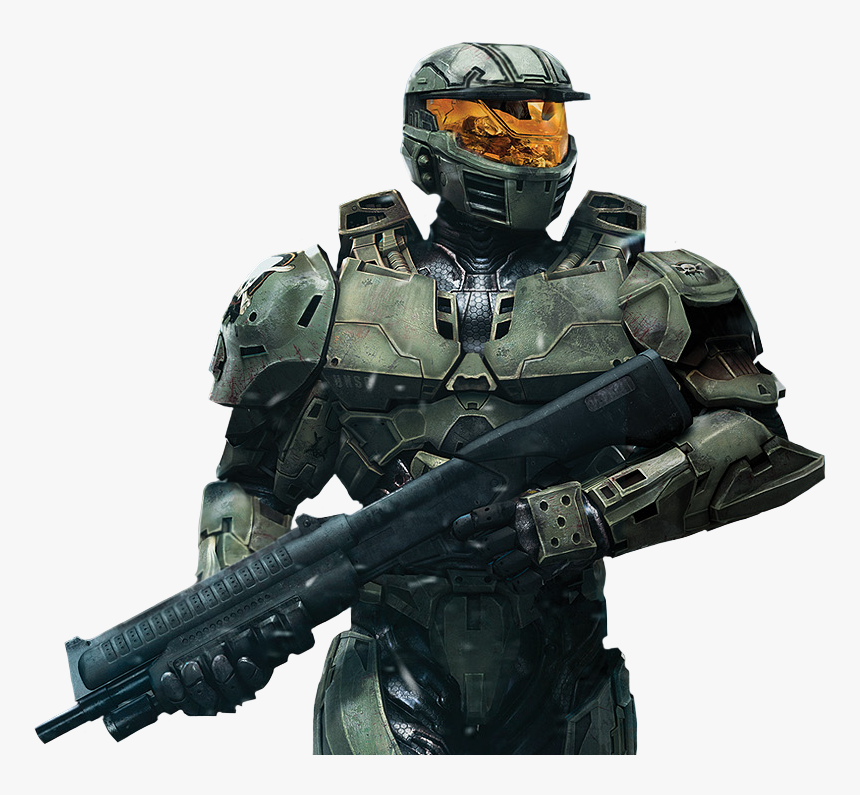
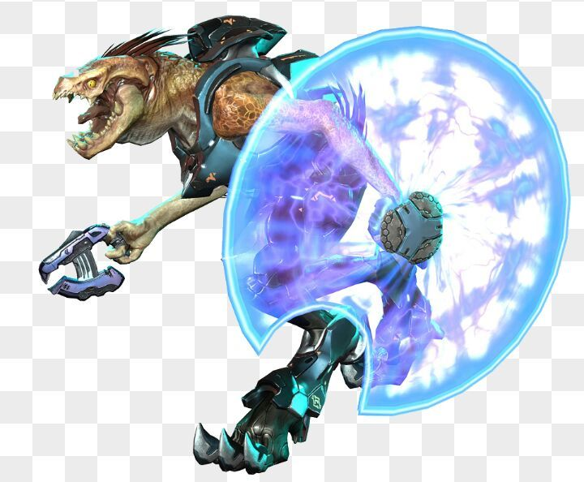
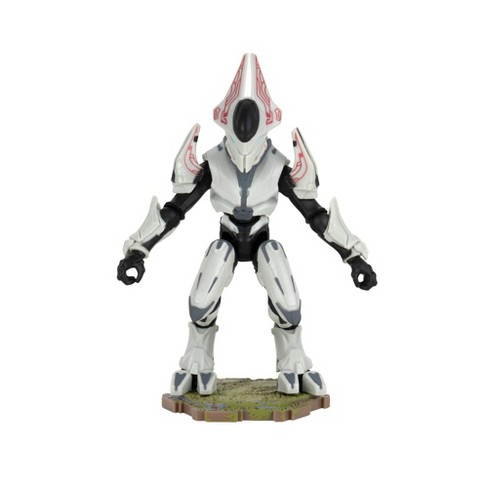
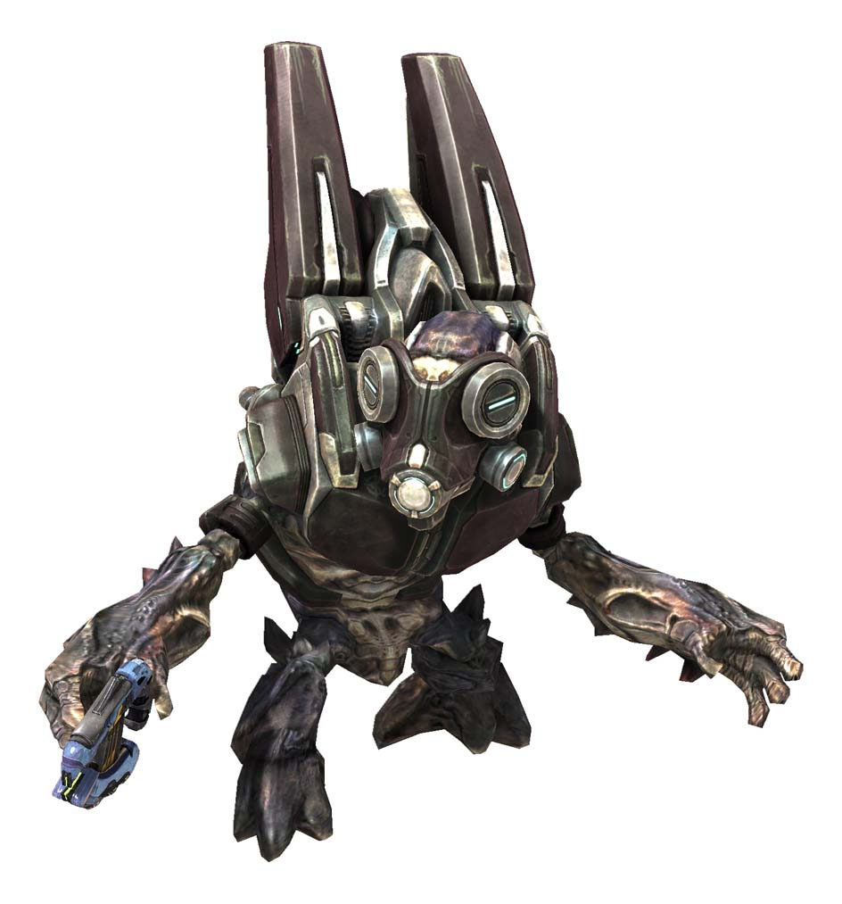

John-117, MCPON
Más conocido como Master Chief (también conocido en español como Jefe Maestro), es un personaje
y el protagonista principal de la serie de videojuegos Halo. SPARTAN-117 es uno de los únicos soldados Spartan
del proyecto SPARTAN-II u ORION-II, nombre en clave del proyecto creado por el UNSC para crear supersoldados
capaces de repeler la insurrección. Su mejor amiga, Cortana, es la que lo acompaña en los cinco juegos de la
franquicia, originalmente rescatada en el tercer juego.
El Jefe Maestro (John-117) ha sido condecorado en diversas ocasiones (faltándole solo la condecoración de
prisionero de guerra) por las UNSC. Por su físico se puede intuir su manera de ser y de comportarse fuera del
campo de batalla. Además es repudiado y temido por el Covenant («le llaman: demonio»).

Kig-yar
Los Kig-Yar, conocidos por los humanos como Jackals, son una especie Sauriana que sirvió en el Covenant.
Nativos de Eayn, un satélite en órbita alrededor del planeta Chu'ot.
Los Kig-Yar inicialmente suponían un reemplazo de los Unggoy como los soldados de campo del Covenant, pero su
temperamento volvió el cambio impráctico. En su lugar, son empleados como exploradores o son formados dentro de
grupos de comando especiales que en general da un mayor uso a sus sentidos excepcionales y su destreza física en
lugar de ser utilizados como fuerza bruta. Además también son utilizados como una fuerza policíaca en lugares
ocupados, estando también bajo una usual supervisión por uno de los miembros de alta casta.

Thel 'Vadam
Es un Sangheili Kaidon de la Casa de Vadam. Fue el último
Inquisidor que tuvo el Covenant y continuó siendo ampliamente conocido por su título en los últimos meses de la
Guerra Humano-Covenant y en el período de la Post-Guerra. En el presente, es el líder de las Espadas de
Sanghelios y es considerado por muchos como el líder formal de los Sangheili en general.
En su prominente carrera militar en el Covenant llegó a servir como un destacado
Comandante Supremo de la Flota de Justicia Particular en la Guerra Humano-Covenant, ganando fama y méritos por
sus brillantes tácticas militares y victorias avasallantes contra los humanos, siendo su mayor logro la Caída de
Reach. 'Vadam fue responsable de la pérdida de más de mil millones de vidas humanas durante la guerra, y la
cristalización de al menos siete colonias.

Locke
Antes de ser un Spartan, Locke sirvió como especialista en adquisiciones, inteligencia, recuperación importante
de objetos de las manos enemigas así como seguimiento y asesinato de objetivos de alto valor. James Locke es
ágil para resolver un rango de complicadas situaciones tanto con su cerebro como con sus habilidades de combate.
Locke dirigió un equipo de la ONI enviado a la Colonia Exterior de Sedra para investigar la actividad terrorista
local. Durante la investigación, la unidad de Locke y la Guardia Colonial de Sedra se vieron obligados a
cooperar después de que la Ciudad de Sedra fuera atacada por un terrorista Sangheili Zealot empuñando una nueva
y poderosa arma biológica.